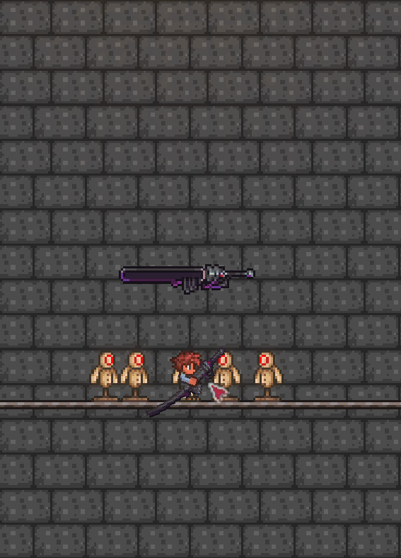

鬼妖村正
鬼妖村正是一把传奇武器，在开启了传奇武器系统设置后可以从地狱实验室中拿取并直接使用
它会随着游戏进度而逐渐强大，有1到15个等级
它的最佳前缀是传奇
普通攻击

技能1-升龙斩

技能2-落樱

终结技-空间斩

鬼妖村正
内部名: Murasama
基本属性
伤害: 10-4000
击退: 1.6-6.5
使用时间: 5
物品介绍
"如果有链锯剑会更好"
伤害成长曲线
| 等级 |
伤害值 |
| 1 |
12 |
| 2 |
16 |
| 3 |
23 |
| 4 |
28 |
| 5 |
40 |
| 6 |
65 |
| 7 |
90 |
| 8 |
140 |
| 9 |
280 |
| 10 |
450 |
| 11 |
750 |
| 12 |
1600 |
| 13 |
1900 |
| 14 |
2400 |
| 15 |
4000 |
刀刃大小成长曲线
| 等级 |
刀刃大小缩放系数 |
| 1 |
0.6 |
| 2 |
0.65 |
| 3 |
0.7 |
| 4 |
0.75 |
| 5 |
0.8 |
| 6 |
0.85 |
| 7 |
0.9 |
| 8 |
1 |
| 9 |
1.1 |
| 10 |
1.2 |
| 11 |
1.3 |
| 12 |
1.35 |
| 13 |
1.4 |
| 14 |
1.45 |
| 15 |
1.5 |
击退值成长曲线
| 等级 |
击退值 |
| 1 |
1.6 |
| 2 |
1.85 |
| 3 |
2.1 |
| 4 |
2.45 |
| 5 |
2.8 |
| 6 |
3.15 |
| 7 |
3.9 |
| 8 |
4.2 |
| 9 |
4.4 |
| 10 |
5.1 |
| 11 |
5.3 |
| 12 |
5.65 |
| 13 |
5.8 |
| 14 |
6.2 |
| 15 |
6.5 |